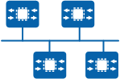
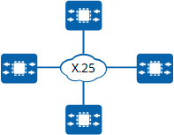
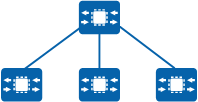

A router ID is a 32-bit unsigned integer and uniquely identifies a device in an AS. A router ID must exist before a device runs OSPF.
A router ID can be generated manually or automatically. If no router ID has been manually configured, the device automatically selects the system ID or the IP address of the current interface as the router ID.
In any of the following situations, router ID reselection may be triggered:
When a large number of devices run OSPF, LSDBs increase in size and often require a significant amount of storage space. Large LSDBs also complicate SPF computation and can overload the devices. As the network scale expands, there is an increasing probability that the network topology changes, causing the network to change continuously. In this case, a large number of OSPF packets are transmitted on the network, leading to a decrease in bandwidth utilization efficiency. Every time the topology changes, each device on the network must recalculate routes.
OSPF resolves this problem by partitioning an AS into different areas, each of which is regarded as a logical group and identified by an area ID. A device, not a link, resides at the border of an area, and a network segment or link can belong to only one area. An area must be specified for each OSPF interface.
OSPF areas include common areas, stub areas, and not-so-stubby areas (NSSAs). Table 1 describes these in more detail.
Area Type |
Function |
Notes |
|---|---|---|
Common area |
By default, OSPF areas are defined as common areas, and these include:
|
|
Stub area |
A stub area is a non-backbone area with only one area border router (ABR) and generally resides at the border of an AS. The ABR in a stub area does not transmit received AS external routes, significantly decreasing the number of entries in the routing table on the ABR and the amount of routing information to be transmitted. To ensure the reachability of AS external routes, the ABR in the stub area generates a default route and advertises it to non-ABR devices in the stub area. A totally stubby area allows only intra-area routes and ABR-advertised Type 3 link state advertisements (LSAs) carrying the default route information to be advertised within the area. The totally stubby area does not allow AS external routes or inter-area routes to be advertised. |
|
NSSA |
An NSSA is similar to a stub area. An NSSA does not advertise Type 5 LSAs but can import AS external routes. ASBRs in an NSSA generate Type 7 LSAs to carry information about the AS external routes, and these Type 7 LSAs are advertised only within the NSSA. When the Type 7 LSAs reach an ABR in the NSSA, the ABR translates them into Type 5 LSAs, which are then flooded to all the other OSPF areas. A totally NSSA allows only intra-area routes to be advertised within the area. |
|
Devices are classified into internal routers, ABRs, backbone routers, and ASBRs by location in an AS. Figure 1 shows the layout of the four device roles, and Table 2 lists their descriptions.
Device Role |
Description |
|---|---|
Internal router |
All interfaces on an internal router belong to the same OSPF area. |
ABR |
An ABR is a device that can belong to two or more areas, one of which must be the backbone area. An ABR connects the backbone area and non-backbone areas, and it can connect to the backbone area either physically or logically. |
Backbone router |
A backbone router is a device that has at least one interface belonging to the backbone area. Backbone routers include internal routers in the backbone area and all ABRs. |
ASBR |
An ASBR exchanges routing information with other ASs. An ASBR may be an internal router or an ABR, and therefore may not necessarily reside at the border of an AS. |
OSPF encapsulates routing information into LSAs for transmission. Table 3 describes different types of LSAs and their functions.
LSA Type |
LSA Function |
|---|---|
Router-LSA (Type 1) |
Describes the link status and cost of a device. Router-LSAs are generated by each device and advertised within the area to which the devices belong. |
Network-LSA (Type 2) |
Describes the link status on the local network segment. Network-LSAs are generated by a designated router (DR) and advertised within the area to which the DR belongs. |
Network-Summary-LSA (Type 3) |
Describes routes on a network segment of an area. Network-Summary-LSAs are generated by an ABR and advertised to other areas, excluding totally stub areas and totally NSSAs. For example, an ABR belongs to both area 0 and area 1, area 0 has a network segment 10.1.1.0, and area 1 has a network segment 10.2.1.0. In this case, the ABR generates Type 3 LSAs destined for the network segment 10.2.1.0 for area 0, and Type 3 LSAs destined for the network segment 10.1.1.0 for area 1. |
ASBR-Summary-LSA (Type 4) |
Describes routes of an area to the ASBRs of other areas. ASBR-Summary-LSAs are generated by an ABR and advertised to other areas, excluding stub areas, totally stub area, NSSAs, and totally NSSAs. |
AS-external-LSA (Type 5) |
Describes AS external routes, which are advertised to all areas, excluding the stub area, totally stubby area, NSSA, and totally NSSA. AS-external-LSAs are generated by an ASBR. |
NSSA-LSA (Type 7) |
Is advertised only in NSSAs.
|
Opaque-LSA (Type 9/Type 10/Type 11) |
Provides a general mechanism for OSPF extension. Different types of LSAs are described as follows:
|
Table 4 describes whether a type of LSA is supported in an area.
Area Type |
Router-LSA (Type 1) |
Network-LSA (Type 2) |
Network-Summary-LSA (Type 3) |
ASBR-Summary-LSA (Type 4) |
AS-external-LSA (Type 5) |
NSSA-LSA (Type 7) |
|---|---|---|---|---|---|---|
Common area (including standard and backbone areas) |
Supported |
Supported |
Supported |
Supported |
Supported |
Not supported |
Stub area |
Supported |
Supported |
Supported |
Not supported |
Not supported |
Not supported |
Totally stub area |
Supported |
Supported |
Not supported |
Not supported |
Not supported |
Not supported |
NSSA |
Supported |
Supported |
Supported |
Not supported |
Not supported |
Supported |
Totally NSSA |
Supported |
Supported |
Not supported |
Not supported |
Not supported |
Supported |
OSPF packets are encapsulated into IP packets, and the OSPF protocol number is 89. OSPF packets are classified as Hello, database description (DD), link state request (LSR), link state update (LSU), or link state acknowledgment (LSAck) packets, as described in Table 5.
Packet Type |
Function |
|---|---|
Hello packet |
Hello packets are sent periodically to discover and maintain OSPF neighbor relationships. |
DD packet |
DD packets contain the summaries of LSAs in the local LSDB, and are used for LSDB synchronization between two devices. |
LSR packet |
LSR packets are sent to OSPF neighbors to request required LSAs. A device sends LSR packets to its OSPF neighbor only after DD packets have been successfully exchanged. |
LSU packet |
LSU packets are used to transmit required LSAs to OSPF neighbors. |
LSAck packet |
LSAck packets are used to acknowledge received LSAs. |
Routes are classified into intra-area, inter-area, and AS external routes. Intra-area and inter-area routes describe the network structure of an AS, and AS external routes describe how to select routes to destinations outside an AS. AS external routes imported by OSPF are classified as Type 1 or Type 2 external routes.
Table 6 describes OSPF routes in descending order of priority.
Route Type |
Description |
|---|---|
Intra-area route |
Routes transmitted within an OSPF area. |
Inter-area route |
Routes transmitted between OSPF areas. |
Type 1 external route |
Type 1 external routes offer higher reliability than Type 2. Cost of a Type 1 external route = Cost of the route from the local device to an ASBR + Cost of the route from the ASBR to the destination If multiple ASBRs exist, the cost of each Type 1 external route is calculated based on the preceding equation. The obtained cost is used for route selection. |
Type 2 external route |
Because a Type 2 external route offers low reliability, its cost is considered to be much greater than the cost of any internal route to an ASBR. Cost of a Type 2 external route = Cost of the route from an ASBR to the destination If multiple ASBRs have routes to the same destination, the route with the lowest cost from the corresponding ASBR to the destination is selected and imported. If the routes to be imported have the same cost from their ASBRs to the destination, the route with the lowest cost from the local device to the corresponding ASBR is selected and then imported. |
Networks are classified as broadcast, non-broadcast multiple access (NBMA), point-to-multipoint (P2MP), or point-to-point (P2P) networks by link layer protocol. Table 7 describes the network types.
Network Type |
Link Layer Protocol |
Graph |
|---|---|---|
Broadcast |
|
 |
NBMA |
X.25 |
 |
P2MP |
Regardless of the link layer protocol, OSPF does not default the network type to P2MP. Instead, P2MP is forcibly changed from another type of network. In most cases, a non-fully meshed NBMA network is changed to a P2MP network. |
 |
P2P |
|
|
OSPF multi-process allows multiple OSPF processes to independently run on the same device. Route exchange between different OSPF processes is similar to that between different routing protocols, and a device interface can belong to only one OSPF process.